Jenkins 从零上手：最常用的功能一篇讲清
Jenkins 的功能多到吓人，插件上千个，设置页面一层套一层。但日常真正用到的就那么几样：建任务、拉代码、跑命令、看日志、写流水线、存密码。
这篇按「二八原则」来写：先把这 20% 最常用的功能讲透，它们能覆盖你 80% 的使用场景。剩下的高级玩法，等真用到了再查也不迟。
文中截图来自我本地临时搭的一个 Jenkins（版本 2.580.1），任务、账号、仓库、凭据都是演示数据。截图上的红色编号和方框，对应正文里的操作步骤。
Jenkins 是干嘛的？
一句话：Jenkins 是一个帮你自动执行「拉代码 → 构建 → 测试 → 部署」的工具。
没有 Jenkins 的时候，发布一个项目大概是这样的：登录服务器，git pull，装依赖，跑测试，打包，重启服务……每次都手敲一遍，容易漏步骤，也没有记录。
有了 Jenkins 之后，你把这些命令写进一个「任务」，以后点一下按钮（或者代码一提交、每天定时）它就自动跑完，每一次跑的过程和结果都留有日志。这就是常说的 CI/CD（持续集成 / 持续部署）。
几个绕不开的概念，先混个脸熟：
| 概念 |
大白话 |
| 任务（Job / Item） |
一件要自动做的事，比如「构建并部署后端」 |
| 构建（Build） |
任务的一次执行，每次都有编号 #1、#2、#3…… |
| 工作空间（Workspace） |
任务拉下来的代码、生成的文件放在哪个目录 |
| 节点（Node / Agent） |
真正执行构建的机器，默认就是 Jenkins 自己这台 |
| 插件（Plugin） |
Jenkins 的几乎所有功能都靠插件，Git、流水线都是插件 |
| 流水线（Pipeline） |
用代码（Jenkinsfile）描述整个构建流程，目前的主流写法 |
一、用 Docker 安装 Jenkins
最省事的安装方式是 Docker，一条命令就能跑起来：
docker run -d --name jenkins \
-p 8080:8080 -p 50000:50000 \
-v jenkins_home:/var/jenkins_home \
--restart=on-failure \
jenkins/jenkins:lts-jdk21
8080 是网页端口，50000 是以后接入其他构建机器用的端口-v jenkins_home:/var/jenkins_home 一定要加，Jenkins 所有的任务、配置、插件、构建记录都存在这个目录里，不挂载的话删掉容器数据就没了- 镜像用
lts 长期支持版，比每周更新的版本稳
启动后浏览器打开 http://服务器IP:8080，进入初始化向导。
1. 解锁 Jenkins
第一次打开会让你输入一个初始管理员密码：
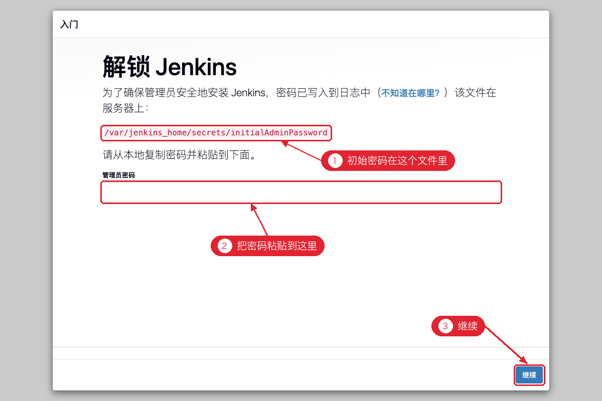
- 页面上写了密码存放的文件路径
- 用下面任意一条命令查出密码，粘贴到输入框
- 点「继续」
# 直接读密码文件
docker exec jenkins cat /var/jenkins_home/secrets/initialAdminPassword
# 或者看启动日志，密码也会打印在里面
docker logs jenkins
2. 安装插件
接下来选择要装哪些插件：
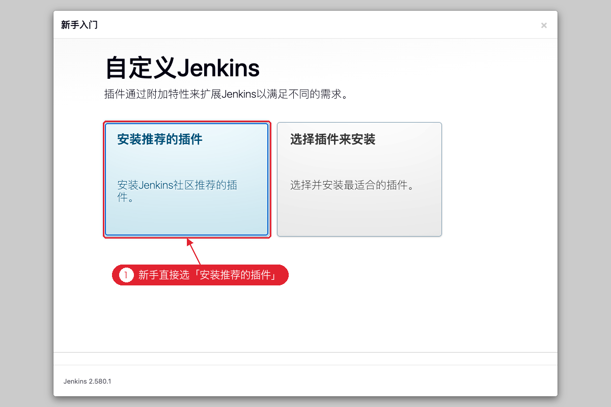
新手 直接选「安装推荐的插件」。推荐列表里已经包含了 Git、Pipeline（流水线）、凭据、时间戳这些后面都会用到的插件，以后缺什么再单独装。
然后就是等它自动下载安装：
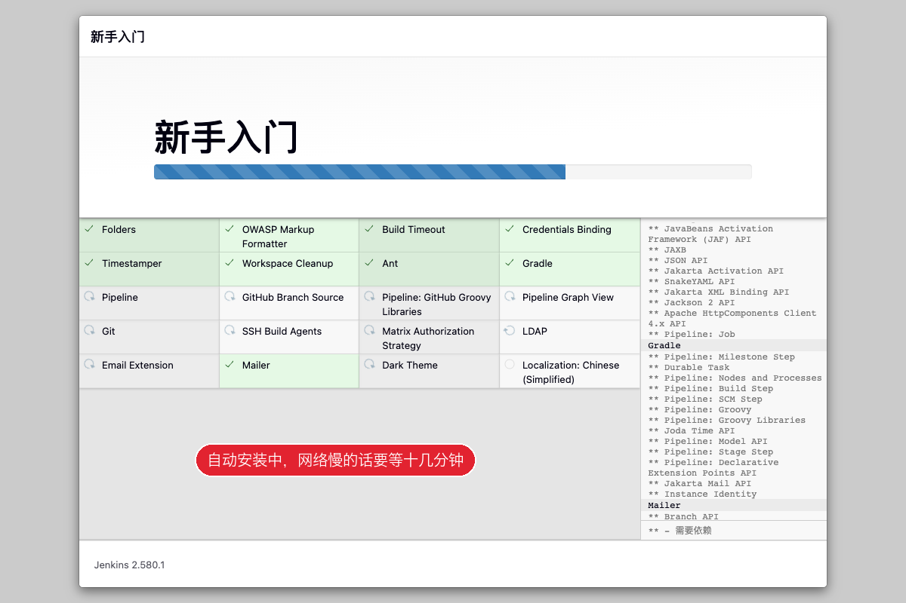
插件是从国外的更新中心下载的，网络不好会很慢，甚至有插件安装失败。失败的话先点「重试」，还不行可以在「系统管理 → 插件管理 → Advanced settings」里把升级站点换成国内镜像，比如清华源 https://mirrors.tuna.tsinghua.edu.cn/jenkins/updates/update-center.json。
3. 创建管理员
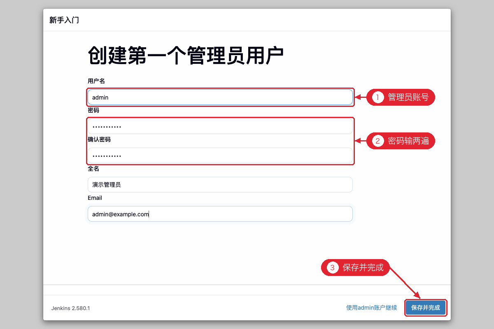
- 填管理员用户名
- 密码输两遍（全名、邮箱随意）
- 点「保存并完成」
4. 实例配置
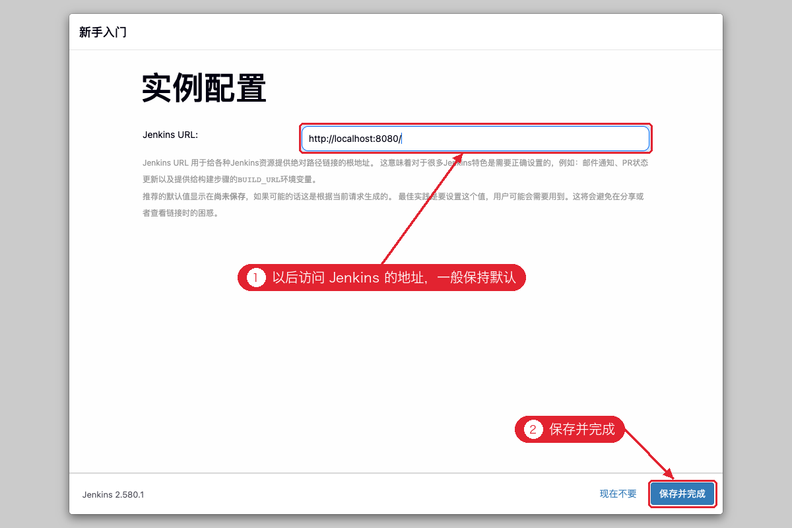
- 这里填 以后访问 Jenkins 用的地址。邮件通知里的链接、构建里的
BUILD_URL 变量都会用到它，一般保持默认；如果以后配了域名，记得回到「系统管理 → 系统配置」里改掉
- 点「保存并完成」，再点「开始使用 Jenkins」，安装就结束了
二、认识首页
进来之后看到的就是首页（Dashboard），我这里已经建好了两个演示任务：
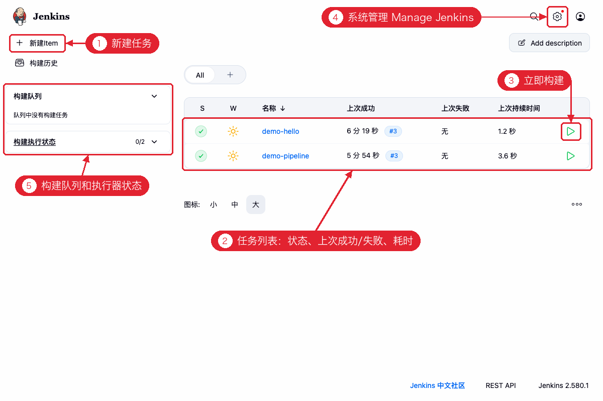
- 新建Item：新建任务，所有的事情都从这里开始
- 任务列表：每个任务一行。第一列 S 是上次构建的状态（绿色对勾成功、红色叉失败），第二列 W 是「天气」，晴天代表最近几次都成功，下雨代表最近经常失败
- 立即构建：点右边的三角形直接跑一次，不用点进任务里
- 系统管理：右上角的齿轮图标，插件、凭据、用户、节点都在这里管
- 构建队列和执行器：排队等待的构建，以及正在跑的构建。
0/2 表示当前机器能同时跑 2 个构建，现在 0 个在跑
三、第一个任务：自由风格项目
Jenkins 的任务类型有好几种，最常用的就两个：
- Freestyle project（自由风格）：在网页上点点鼠标就能配置，适合入门和简单任务
- 流水线（Pipeline）：用代码写构建流程，适合正式项目，第五节细讲
先用自由风格建一个任务，把核心配置都过一遍。
1. 新建任务
点首页左上角的「新建Item」：
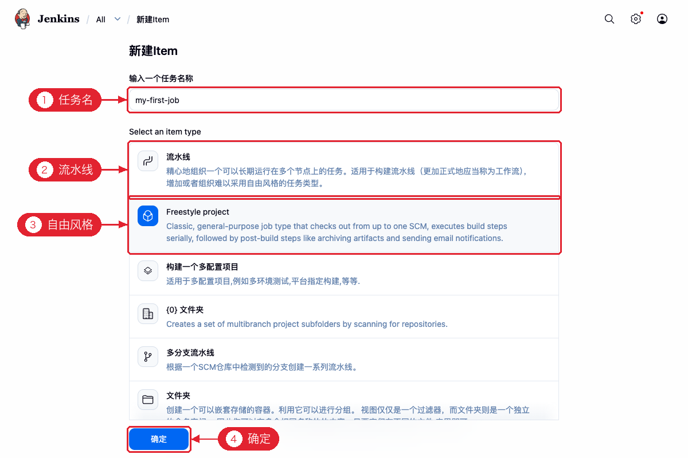
- 填任务名，建议用英文、不要带空格，因为任务名会变成工作空间的目录名和 URL 的一部分
- 「流水线」类型，后面再用
- 这次选「Freestyle project」
- 点「确定」，进入配置页面
配置页面很长，左侧是分区导航：General、源码管理、Triggers、Environment、Build Steps、构建后操作。下面按顺序讲常用的部分。改完任何配置，都要点页面底部的 Save（保存） 或 应用 才会生效。
2. General：描述和参数
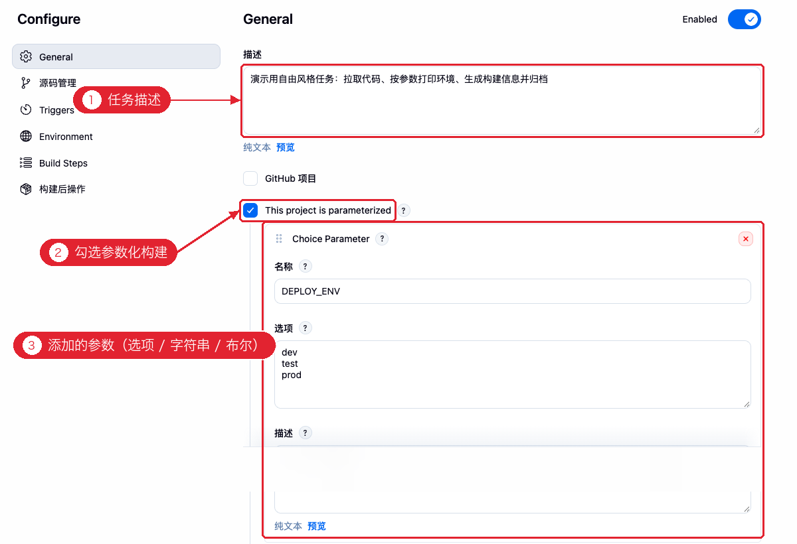
- 描述：写清楚这个任务是干嘛的，任务多了以后很有用
- This project is parameterized（参数化构建）：勾上之后，每次构建前可以手动选择 / 填写参数
- 添加参数：最常用的三种
- Choice Parameter（选项参数）：下拉框，比如部署环境
dev / test / prod，一行一个选项
- String Parameter（字符串参数）：文本框，比如版本号、分支名
- Boolean Parameter（布尔参数）：勾选框，比如要不要跑测试
参数在构建命令里直接当环境变量用：$DEPLOY_ENV、$VERSION。
General 里还有一个强烈建议勾上的选项：丢弃旧的构建，设置「保持构建的最大个数」比如 20。不然构建记录和日志会一直堆积，时间长了把磁盘塞满。
3. 源码管理：从 Git 拉代码
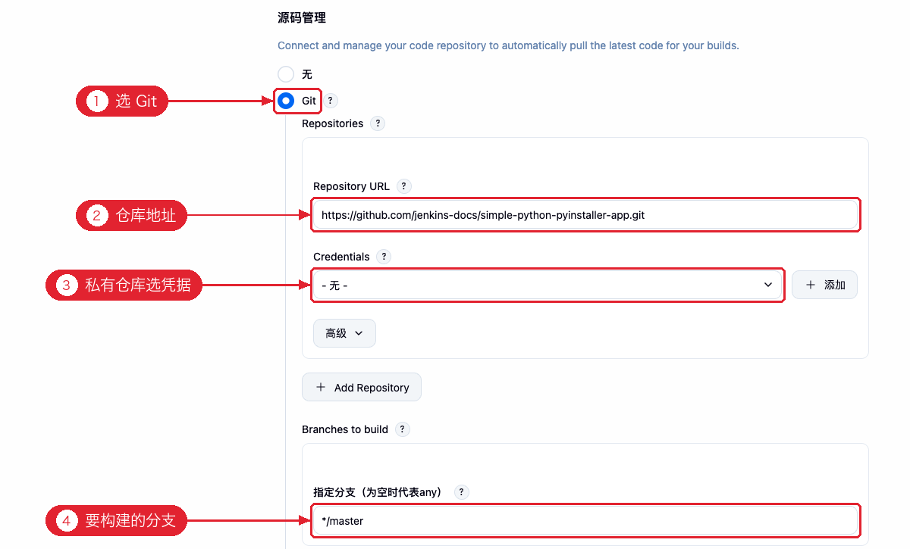
- 选「Git」
- 填仓库地址。我这里用的是 Jenkins 官方的公开示例仓库
- Credentials（凭据）：公开仓库选「无」就行；私有仓库要选一个账号密码或 SSH 私钥，怎么添加看第六节
- 指定分支：要构建哪个分支，比如
*/master、*/main、*/dev
配好之后，每次构建开始前 Jenkins 会自动把代码拉到工作空间里，后面的构建命令就在这个代码目录下执行。
4. Triggers：什么时候自动构建
不配置触发器的话，任务只能手动点按钮跑。常用的触发方式有这几种：
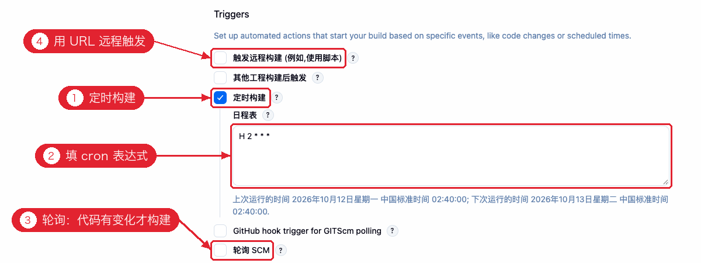
- 定时构建：到点就跑，不管代码有没有变化。适合每天的定时任务、夜间构建
- 日程表：填 cron 表达式，下方会提示上次和下次运行的时间，填完可以看一眼对不对
- 轮询 SCM：也填 cron 表达式，但它是定时去 检查代码有没有新提交，有变化才构建
- 触发远程构建：通过访问一个 URL 来触发，方便脚本或其他系统调用
Jenkins 的 cron 和 Linux 的一样是五段：分 时 日 月 周。区别是多了一个 H，意思是「随机挑一个固定的值」，用来把大量任务错开，避免整点同时启动把机器压垮：
| 表达式 |
意思 |
H 2 * * * |
每天凌晨 2 点多跑一次（具体几分由 H 决定，但每天固定） |
H/15 * * * * |
每 15 分钟一次 |
H 9 * * 1-5 |
工作日每天早上 9 点多 |
0 0 1 * * |
每月 1 号 0 点整 |
cron 表达式不熟的话，可以看我之前写的这篇：cron 表达式：设置定时任务。
代码一提交就自动构建，最常见的做法是配 Webhook：在 GitHub / GitLab 仓库的设置里添加 Webhook，地址填 http://你的Jenkins地址/github-webhook/，然后在这里勾上「GitHub hook trigger for GITScm polling」。前提是 Jenkins 能被代码平台从外网访问到，内网的 Jenkins 就只能用轮询 SCM 了。
5. Build Steps 和构建后操作
这是任务真正干活的地方：
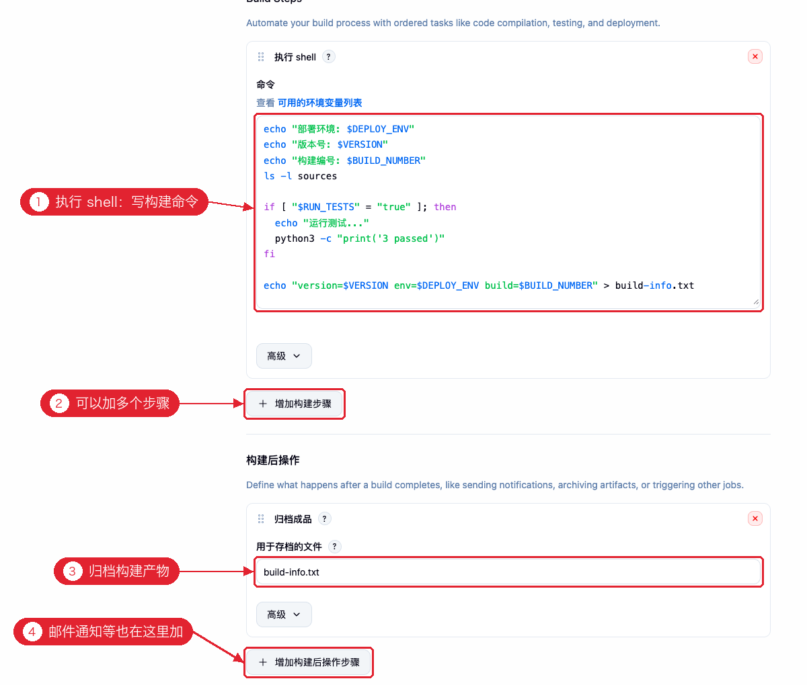
- 执行 shell：在「增加构建步骤」里选「执行 shell」（Windows 上是「执行 Windows 批处理命令」），然后写命令。这里的命令就是你平时在服务器上手敲的那些，比如
npm install && npm run build、mvn package、pip install -r requirements.txt
- 增加构建步骤：可以加多个步骤，按顺序执行，任何一步返回非 0 的退出码，构建就判定为失败，后面的步骤不再执行
- 归档成品：把构建产出的文件（jar 包、压缩包、报告）保存到这次构建的记录里，之后可以在网页上直接下载。我这里归档的是
build-info.txt
- 构建后操作里还有邮件通知、触发其他任务等，按需添加
命令里可以直接用参数和 Jenkins 内置的环境变量，最常用的几个：
| 变量 |
含义 |
BUILD_NUMBER |
构建编号，1、2、3…… |
JOB_NAME |
任务名 |
WORKSPACE |
工作空间的绝对路径 |
BUILD_URL |
这次构建的网页地址 |
GIT_COMMIT / GIT_BRANCH |
拉取的代码版本和分支（配了 Git 才有） |
完整列表可以点 shell 输入框上方的「可用的环境变量列表」。
最后点 Save 保存，第一个任务就建好了。
四、跑起来：带参数构建、看日志
进入任务页面：
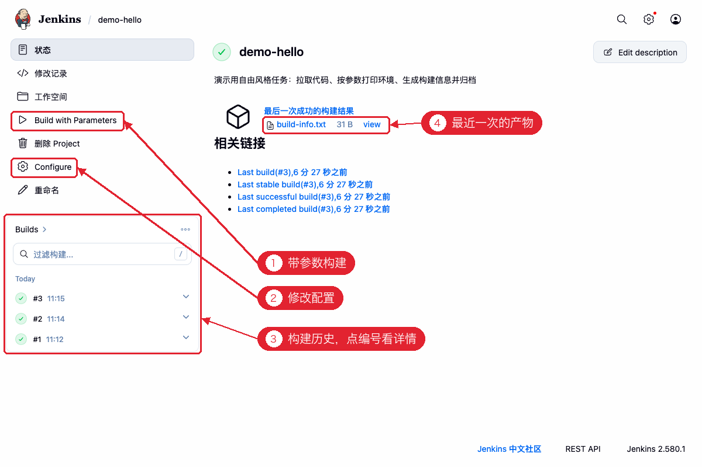
- Build with Parameters：参数化的任务，「立即构建」按钮会变成这个
- Configure：回到配置页面修改
- 构建历史：每一次构建一行，绿色成功、红色失败、灰色取消，点编号进入这次构建的详情
- 中间显示最近一次成功构建归档的产物，可以直接点击下载
点「Build with Parameters」，会先让你填参数：
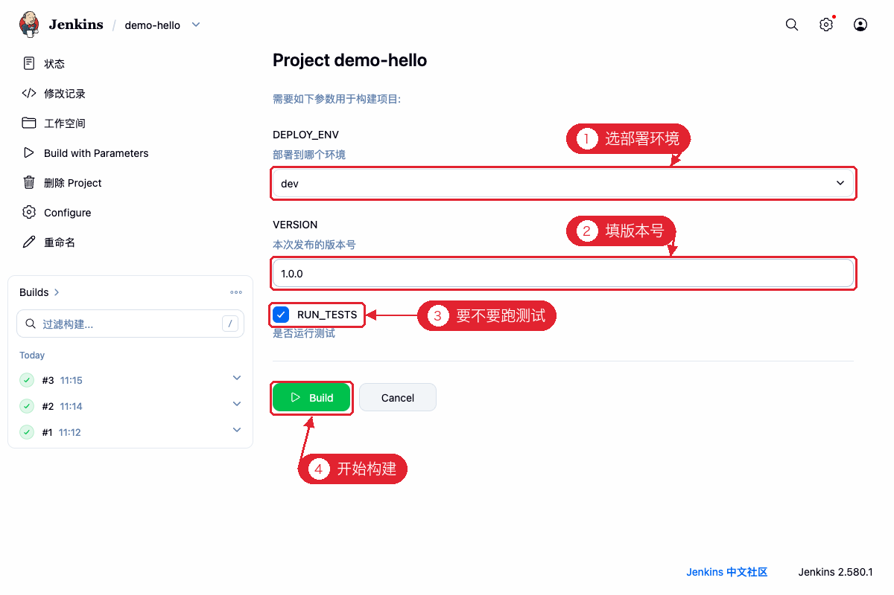
- 下拉选部署环境
- 填版本号
- 勾选要不要跑测试
- 点「Build」开始构建
构建跑完（或者跑的过程中）点进构建编号，再点左侧的「控制台输出」，就能看到完整的执行日志：
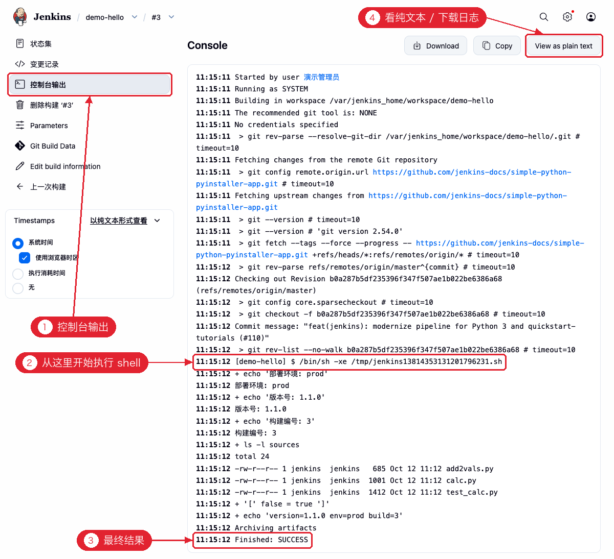
- 控制台输出：排查问题第一个要看的地方，构建失败了 99% 的原因都写在这里
- 前半段是 Jenkins 拉代码的过程，从
$ /bin/sh -xe 这一行开始执行的就是你写的 shell 命令。带 + 号的是执行的命令本身，下面紧跟着的是命令的输出
- 最后一行是这次构建的最终结果，
Finished: SUCCESS 成功，Finished: FAILURE 失败
- 日志太长时可以「View as plain text」看纯文本，或者下载下来搜索
每行开头的时间戳来自推荐插件里的 Timestamper，要在任务配置的 Environment 里勾上「在构建日志中添加时间戳前缀」才会显示，排查哪一步慢的时候特别好用。
五、流水线 Pipeline：正式项目都用它
自由风格的问题是：配置都存在 Jenkins 网页里，改了什么没有记录，任务多了也没法复用。流水线（Pipeline）把整个构建流程写成代码，这个代码文件叫 Jenkinsfile，可以和项目代码一起放进 Git 管理，有版本、能 review、能复制给别的项目。现在新建的项目基本都推荐用流水线。
1. 一个完整的 Jenkinsfile
下面是我演示用的流水线，做的事情和上面的自由风格任务差不多：拉代码、装依赖、跑测试、打包、部署。
pipeline {
agent any // 在哪台机器上跑，any 表示随便哪台
parameters { // 参数，等同于自由风格里的参数化构建
choice(name: 'DEPLOY_ENV', choices: ['dev', 'test', 'prod'], description: '部署到哪个环境')
string(name: 'VERSION', defaultValue: '1.0.0', description: '版本号')
}
options {
timestamps() // 日志加时间戳
buildDiscarder(logRotator(numToKeepStr: '20')) // 只保留最近 20 次构建
}
stages {
stage('拉取代码') {
steps {
git branch: 'master', url: 'https://github.com/jenkins-docs/simple-python-pyinstaller-app.git'
}
}
stage('安装依赖') {
steps {
sh 'python3 --version'
}
}
stage('运行测试') {
steps {
sh 'python3 -m py_compile sources/calc.py && echo "测试通过"'
}
}
stage('打包') {
steps {
sh "tar czf app-${params.VERSION}.tar.gz sources"
archiveArtifacts artifacts: "app-${params.VERSION}.tar.gz"
}
}
stage('部署') {
when { expression { params.DEPLOY_ENV != 'dev' } } // dev 环境不部署
steps {
echo "部署 ${params.VERSION} 到 ${params.DEPLOY_ENV} 环境（演示，只打印不执行）"
}
}
}
post { // 构建结束后，根据结果做不同的事
success { echo '构建成功' }
failure { echo '构建失败，记得看控制台日志' }
}
}
结构其实很固定，记住这几个关键字就够用了：
| 关键字 |
作用 |
pipeline { } |
最外层，声明式流水线的固定开头 |
agent |
在哪个节点上执行，入门用 any 就行 |
parameters |
构建参数，用 params.名字 取值 |
stages / stage('名字') |
划分阶段，每个阶段在界面上显示成一个节点 |
steps |
阶段里具体要执行的步骤，sh 执行 shell，echo 打印 |
when |
满足条件才执行这个阶段 |
post |
构建结束后执行，always 总是执行、success 成功时、failure 失败时 |
注意 Groovy 的字符串规则：单引号里的 ${} 不会被替换，双引号才会。所以上面用到 ${params.VERSION} 的地方都用了双引号。
2. 创建流水线任务
新建Item，类型选「流水线」，配置页面拉到最下面的「流水线」区域：
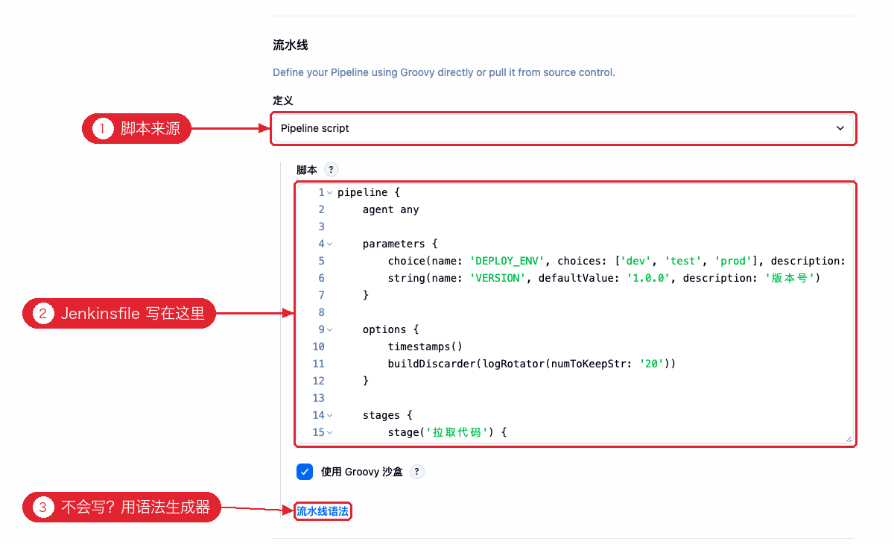
- 定义：脚本从哪里来，有两个选项
Pipeline script：脚本直接写在网页上，适合学习和调试，我这里用的就是这个Pipeline script from SCM：从 Git 仓库里读取 Jenkinsfile，正式项目推荐用这个，把 Jenkinsfile 放在项目根目录，这里只要填仓库地址和分支
- 把上面的 Jenkinsfile 粘贴进脚本框
- 流水线语法：不知道某个步骤怎么写时点这里，它是一个代码生成器，在网页上选好步骤、填好参数，就能自动生成对应的流水线代码
保存后点「Build with Parameters」运行。
流水线里第一次加了 parameters 的话，第一次构建是用默认值跑的，跑完之后 Jenkins 才认识这些参数，从第二次开始才会出现参数填写页面。
3. 看流水线的运行结果
流水线最直观的地方是能看到每个阶段的状态。进入某次构建，点左侧的「Pipeline Overview」：
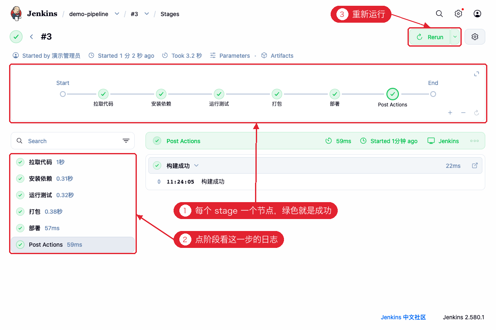
- 每个 stage 显示成一个节点，绿色成功、红色失败，一眼就知道卡在了哪一步
- 点左侧列表里的某个阶段，右边只显示这个阶段的日志，不用在几千行日志里翻
- 「Rerun」用同样的参数重新跑一次。构建页左侧还有「从指定阶段重新运行」，前面的阶段没问题时不用从头再来
在任务页面点左侧的「Stages」，可以看到所有构建的阶段对比：
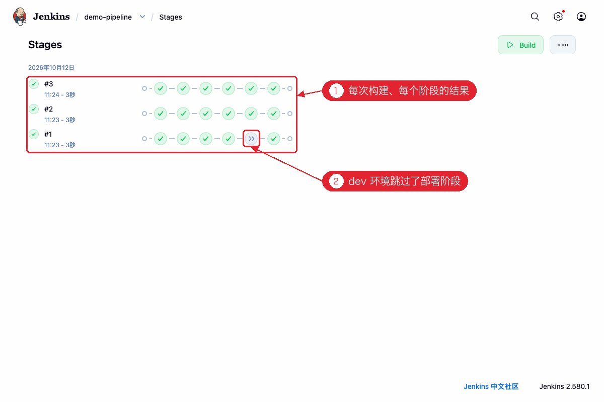
- 每一行是一次构建，每个圆点是一个阶段
- #1 用的是 dev 环境，
when 条件不满足，「部署」阶段被跳过，显示成了跳过图标
六、凭据：密码不要写进脚本里
拉私有仓库要账号密码，部署要服务器的 SSH 密钥，调接口要 Token。这些敏感信息 千万不要直接写在任务配置或 Jenkinsfile 里，应该存进 Jenkins 的「凭据」，用的时候按 ID 引用。日志里输出凭据时，Jenkins 还会自动把它替换成 ****。
入口：系统管理 → 凭据管理 → 系统 → 全局凭据 → Add Credentials。
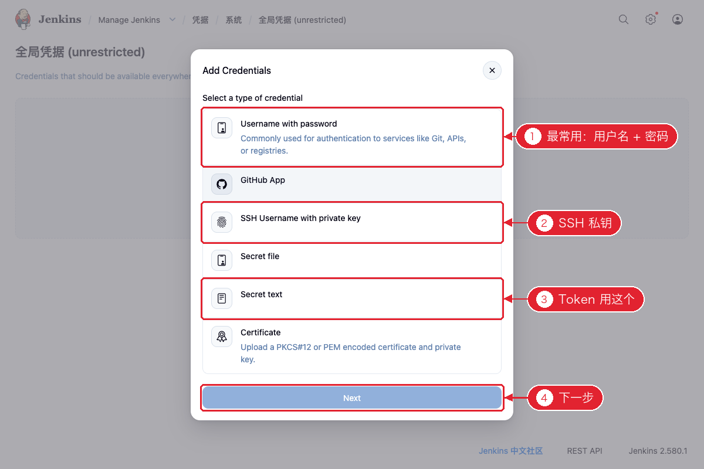
- Username with password：用户名 + 密码，最常用，拉私有 Git 仓库、登录镜像仓库都用它（GitHub 现在要填 Personal Access Token 而不是登录密码）
- SSH Username with private key：SSH 私钥，用 SSH 地址拉代码、登录服务器部署时用
- Secret text：单独一串密文，比如各种 API Token、钉钉 / 飞书机器人的密钥
- 选好类型点「Next」
以用户名密码为例：
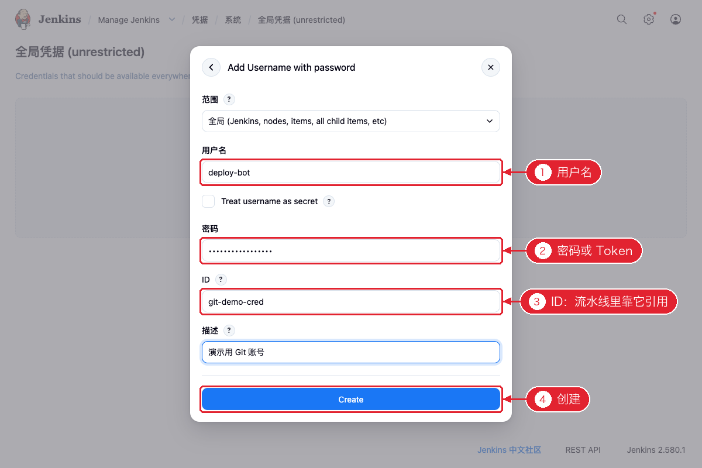
- 用户名
- 密码或 Token
- ID：凭据的唯一名字，流水线里就靠它来引用。不填会自动生成一串随机字符，建议自己起一个看得懂的名字
- 点「Create」保存
在自由风格任务里，源码管理的 Credentials 下拉框就能选到它。在流水线里这样用：
// 拉私有仓库
git branch: 'main', credentialsId: 'git-demo-cred', url: 'https://github.com/xxx/private-repo.git'
// 把凭据注入成环境变量，只在大括号内有效
withCredentials([usernamePassword(credentialsId: 'git-demo-cred',
usernameVariable: 'USER',
passwordVariable: 'PASS')]) {
sh 'docker login -u "$USER" -p "$PASS" registry.example.com'
}
// Secret text 类型
withCredentials([string(credentialsId: 'api-token', variable: 'TOKEN')]) {
sh 'curl -H "Authorization: Bearer $TOKEN" https://api.example.com/deploy'
}
sh 里引用凭据变量时用 单引号，让 shell 去取环境变量；用双引号的话 Groovy 会先把密码拼进命令字符串，Jenkins 也会给出安全警告。
七、插件管理
Jenkins 本身只是个架子，功能几乎都来自插件。入口：系统管理 → 插件管理。
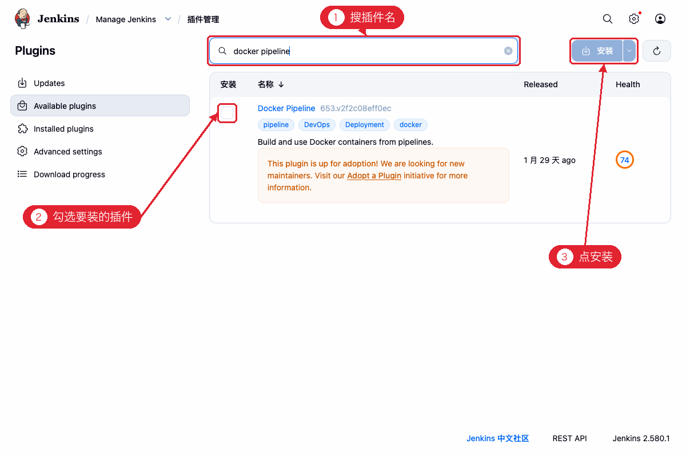
- 在「Available plugins」里搜索插件名
- 勾选要装的插件
- 点右上角「安装」，装完有的插件需要重启 Jenkins 才生效
左侧的「Updates」可以批量升级插件，「Installed plugins」可以禁用或卸载。
除了推荐插件里自带的 Git、Pipeline、Credentials Binding、Timestamper、Workspace Cleanup，下面这些也比较常用，按需安装：
| 插件 |
用途 |
| Localization: Chinese (Simplified) |
中文界面（推荐插件里已带，部分页面还是英文） |
| Pipeline Graph View |
上面看到的流水线阶段图（新版推荐插件里已带） |
| Docker Pipeline |
在流水线里用 Docker 容器作为构建环境 |
| Publish Over SSH / SSH Agent |
把构建产物传到服务器、在服务器上执行命令 |
| Role-based Authorization Strategy |
按角色分配权限，团队多人使用时需要 |
| Generic Webhook Trigger |
接收任意系统的 Webhook 来触发构建 |
| Email Extension |
更灵活的邮件通知 |
插件不是越多越好，装得越多 Jenkins 启动越慢、升级时越容易出兼容问题，用不到的插件就别装。
八、系统管理里常用的几个入口
点右上角齿轮进入「Manage Jenkins」，入口很多，常用的就这几个：
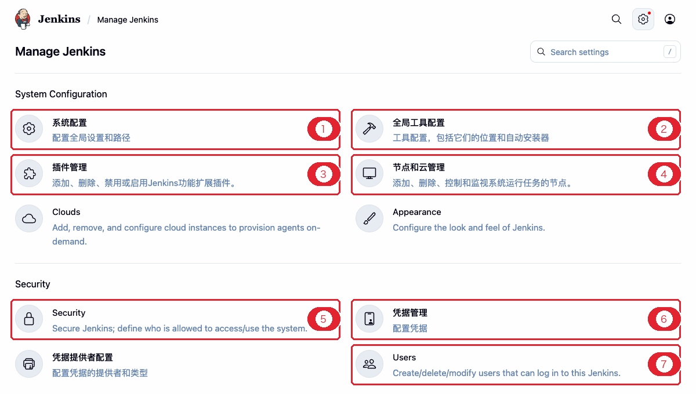
- 系统配置：Jenkins URL、全局环境变量、邮件服务器（SMTP）、执行器数量等全局设置
- 全局工具配置：配置 JDK、Maven、Node.js、Git 等工具的安装路径或自动安装，配好后任务里可以直接选用
- 插件管理：上一节讲过
- 节点和云管理：添加其他机器作为构建节点。构建任务多、需要不同系统（比如要打 Windows 和 Linux 两种包）时才需要
- Security：全局安全配置，比如是否允许匿名访问、用什么方式管理权限
- 凭据管理：上面讲的凭据
- Users：添加、删除用户，修改密码
九、常见问题
1. 构建报 command not found，找不到 python / node / mvn？
构建命令是在 Jenkins 所在的环境里执行的。用 Docker 跑的 Jenkins，容器里默认只有 Java 和 Git，你本机装的 Python、Node 它是看不到的。解决办法有几种：基于官方镜像写个 Dockerfile 把需要的工具装进去；在「全局工具配置」里配置自动安装；或者在流水线里用 Docker Pipeline 插件，指定一个带好工具的镜像来构建。
2. 怎么用脚本或其他系统触发构建？
先在右上角用户菜单 → Security 里生成一个 API Token，然后：
# 无参数任务
curl -X POST http://localhost:8080/job/demo-hello/build --user admin:你的APIToken
# 带参数任务
curl -X POST http://localhost:8080/job/demo-hello/buildWithParameters \
--user admin:你的APIToken \
--data DEPLOY_ENV=test --data VERSION=1.0.1
3. 构建一直排队不执行？
看首页左侧的「构建执行状态」，执行器是不是都被占满了，或者节点离线了。也可能是任务指定的 agent 标签没有对应的节点。
4. 忘记管理员密码怎么办？
停掉 Jenkins，编辑 jenkins_home/config.xml，把 <useSecurity>true</useSecurity> 改成 false，重启后就能免密进入，进去后重新设置密码，再到 Security 里把安全配置开回来。改完一定记得开回来，否则谁都能访问你的 Jenkins。
5. 怎么备份和迁移？
Jenkins 的所有数据都在 jenkins_home 这一个目录里，备份这个目录就行。迁移到新机器时，把目录拷过去，用同样版本的 Jenkins 挂载启动即可。其中 workspace 子目录是可以重新生成的代码检出目录，备份时可以排除掉。
6. 系统管理页面提示「Building on the built-in node can be a security issue」？
意思是在 Jenkins 主节点上直接跑构建有安全风险，因为构建脚本能读到 Jenkins 自己的所有数据。个人或小团队自己用可以先忽略；正式的团队环境，建议另外添加构建节点，把构建放到节点上跑。
总结
回顾一下这篇覆盖的最常用功能：
- 安装：Docker 一条命令，挂载
jenkins_home，装推荐插件
- 自由风格任务：参数化构建 → 源码管理拉 Git → 触发器定时 / 轮询 / Webhook → 执行 shell → 归档成品
- 构建和日志：Build with Parameters 选参数，出了问题第一时间看控制台输出
- 流水线：把流程写成 Jenkinsfile，
stages 分阶段，when 加条件，post 处理结果，正式项目用 Pipeline script from SCM
- 凭据：密码、密钥、Token 都存进凭据，用 ID 引用
- 插件：按需安装，不贪多
把这些掌握了，日常的自动构建、自动部署基本都能自己搞定。等遇到多分支自动构建、分布式节点、权限细分这些需求时，再去深入对应的功能就好。